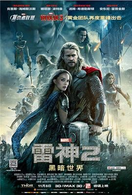

7.4
雷神2：黑暗世界
Thor: The Dark World
2013
美国
评分 7.4
导演:
阿兰·泰勒
演员:
克里斯·海姆斯沃斯 / 娜塔莉·波特曼 / 汤姆·希德勒斯顿 / 安东尼·霍普金斯 / 克里斯托弗·埃克莱斯顿 / 杰米·亚历山大 / 扎克瑞·莱维
类型:
冒险,动作,奇幻
剧情简介
故事发生在纽约之战之后，索尔肩负起维持九界秩序的职责，他在各个王国之间奔走平乱，让阿斯加德重新稳固。然而，地球上的简·福斯特始终在他心中占据重要位置。简在调查一处异常能量区域时意外接触到古老的以太粒子，这股失落已久的黑暗力量在她体内苏醒，使她成为黑暗精灵首领玛勒基斯迫切追寻的目标。索尔得知消息后立即返回地球，将简带至阿斯加德，希望借王族力量解除危机。然而，以太的觉醒也唤醒了玛勒基斯的军队。黑暗精灵对阿斯加德发动突然袭击，宫殿遭到重创，让整个王国意识到这场危机远比想象更深。索尔被迫在守护王国与保护简之间作出抉择。他寻求帮助的对象居然是被囚禁的洛基，后者狡黠又难以信任，却拥有他们需要的独特智慧和手段。随着“天体汇聚”即将到来，九界边界变得脆弱不稳定，黑暗力量不断渗透。索尔与洛基共同踏上冒险旅程，在陌生星域与敌军周旋，既要抵御玛勒基斯的追杀，也要设法将以太从简体内剥离。过程中，兄弟间的矛盾、信任与背叛交织，让任务更加复杂。影片在宏大的神域与现实世界间切换，通过激烈战斗和情感冲突展现索尔在责任、爱情与牺牲之间的抉择，也让他真正理解何为守护九界的重量。